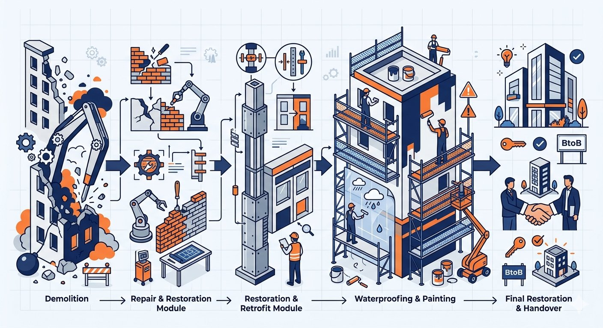

単なる塗装会社ではなく、周辺工程をまとめて動かせる施工体制が強みです。
外壁・屋上塗装と同時に防水処理を施工。雨漏り対策と塗装を1回の足場で完結します。
ひび割れ・欠損の下地補修から塗装まで一括対応。仕上がりと耐久性を高めます。
内装・外構の解体から改修・仕上げ復旧まで一貫対応。業者手配を一本化できます。
仮設足場の設置から塗装・付帯工事・後片付けまで、工程全体をまとめて管理します。
建物各部の補修を1回の施工計画にまとめます。細部まで対応する法人補修に強みがあります。
複数業者に分けて手配する手間をなくし、工程管理の窓口をKANEXに一本化できます。
解体から最終復旧まで、一貫した施工体制でお客様の現場を支えます。

法人施設・工場・倉庫・店舗から住宅まで、幅広い現場に対応します。
コンクリート外壁、ALC外壁、鉄骨・金属板屋根などの塗装・塗り替え。工場・倉庫・事業所など大型施設も対応します。
フェンス、階段、手すり、架台などの鉄部塗装から、床面の防滑・耐薬品塗装まで。法人施設の細部補修に対応します。
屋上・ベランダ防水、外壁シーリング打ち替え・増し打ちなど、雨漏り対策・予防工事に対応します。
内装解体・外構撤去・設備撤去など、改修工事に伴う解体・撤去に対応。復旧・仕上げまで一貫して承ります。
外壁・屋根工事に伴う仮設足場の設置・解体に対応。安全で効率的な施工環境を整えます。
店舗・事業所・住宅のリフォームや部分改修に対応。用途に合わせた仕様変更・仕上げも承ります。
KANEXでは、工場、倉庫、事業所、物流関連施設、製造業関連施設など、法人施設を中心に幅広い工事に対応してきました。単なる住宅塗装ではなく、法人施設の維持管理・改修・補修に関する現場対応力を強みとしています。
こんなお困りごとをお持ちの方は、ぜひKANEXにご相談ください。